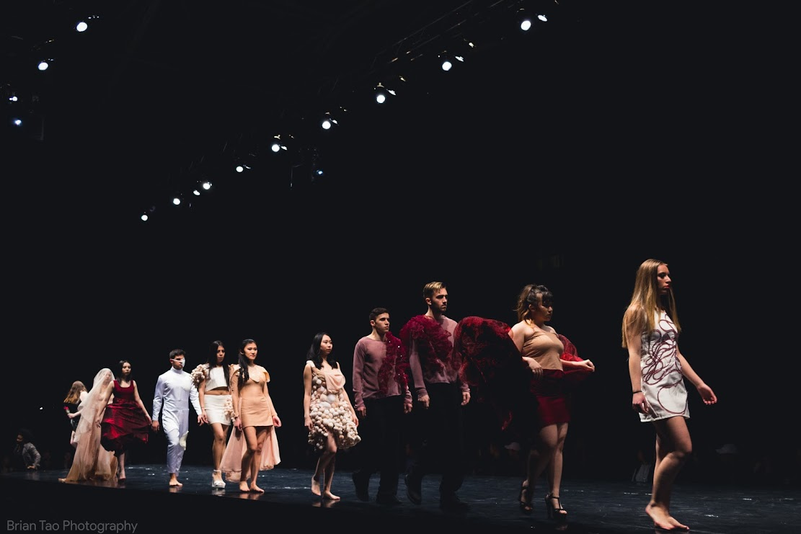
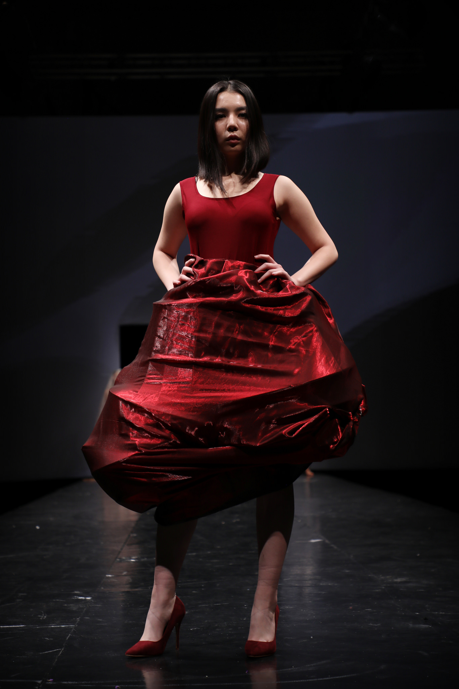
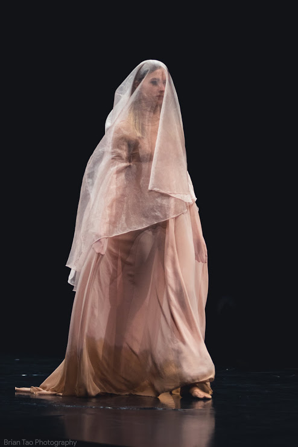

Morfologia is an exploration of biological forms and functions.
We made 10 looks over the course for Pittsburgh’s largest fashion show, Lunar Gala, and incorporated interactive technologies and interdisciplinary concepts into the construction of the line.
Designed and Fabricated with Soojin Sohn, conceptualized with Kabir Mantha. Further assistance provided by Filipe D’oropeza, Varun Gahd, Priscilla Medor, Ulani Qi, and JiEun Sohn.
Lunar Gala 2018
About the Line
Our line is titled Morfologia, the Italian word for morphology, meaning shape or form. The line draws from the forms of the body, both literal and metaphoric, and is particularly focused on the ways we are conditioned to view, inhabit, and interact with our bodies.
The line consists of nine distinct looks, each with different silhouettes and employing different materials and fabrication techniques. The throughline of the project is the use of organic body motifs, red and nude tones, and contrasting sheer silks and elastic synthetic fibers.
I served as lead designer, designing eight of the ten looks, fabricated three of the outfits, and helped with fabrication on another four of our looks.



